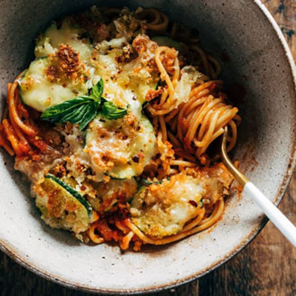

Chicken Wraps
Hellllooo quick summer lunch! These chicken wraps have me hooked.
Shredded chicken, crispy cheddar cheese, fresh veg like tomato,
corn, and lettuce, some pickled red onion, and not one, but TWO
sauces.

INGREDIENTS
- 1/2 pound of uncooked spaghetti
- spaghetti sauce
- 1 zucchini, cut into 1/4 inch-thick rounds
- 1 egg
- 1 cup panko breadcrumbs
- 1/2 cup grated Parmesan cheese
- 1 tablespoon lemon zest
- 1 teaspoon salt and pepper to taste
- 1 teaspoon Italian seasoning
- 1/2 teaspoon garlic powder
INSTRUCTIONS
- Cook the spaghetti according to package directions. Drain and
toss with sauce. I like to add extra olive oil, salt, and pepper
to taste to just kick things up a notch.
- Preheat the oven to 400 degrees. Beat the egg in a large bowl;
add zucchini and toss to coat. Add panko, Parmesan, lemon zest,
and spices. Toss to coat as much as possible. Transfer to a baking
sheet - arrange the zucchini with some space between, and spoon the
crispity crumbles on and around the zucchini. Drizzle with olive oil.
Bake for 15-20 minutes until nice and golden brown.
- Remove pan from the oven. Sprinkle with your cheese of choice
and return to bake or broil for a final 5 minutes. Top with fresh
basil leaves, more olive oil, red pepper flakes, etc.
- Serve the spaghetti in deep pasta bowls topped with a scoop of
cheesy crispy zucchini and more fresh basil. Mwah.
NUTRITION FACTS
Serves 1
Calories Per Serving: 378 |
| Total Fat 24.9g |
32% |
Cholesterol 0mg |
0% |
| Sodium 305.5mg |
13% |
Sugars 20.6g |
0% |
| Protein 10.8g |
22% |
Vitamin A 0µg |
0% |
| Vitamin C 0.4mg |
0% |
Iron 4.1mg |
23% |
| Potassium 577.8mg |
12% |
Phosphorus 341.2mg |
27% |